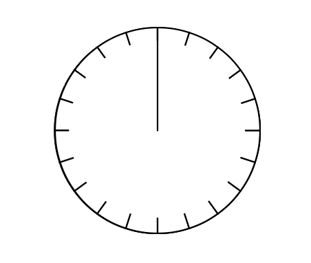
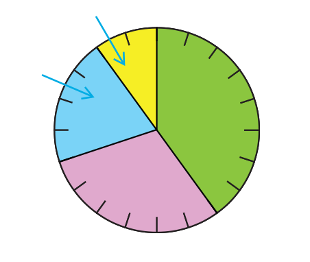

- 문제 1
- 문제 2
- 문제 3
- 문제 4
- 문제 5
-
어느 우산 가게에서 한 달 동안 팔린 우산의 색깔을 조사하여 나타낸 표입니다. 표를 완성해 보시오.
팔린 색깔별 우산 수색깔 검은색 흰색 노란색 기타 합계 우산 수(개) 60 45 30 15 150 백분율(%) 40302010100 -
1번 문제의 표를 보고 띠그래프와 원그래프를 완성하시오.
그래프를 각각 클릭하세요.-
팔린 색깔별 우산 수0102030405060708090100(%)검은색(40 %)흰색(30 %)노란색(20 %)기타(10 %)
-
팔린 색깔별 우산 수0255075검은색
(40 %)흰색
(30 %)노란색
(20 %)기타(10 %)
-
-
두 그래프의 공통점을 찾아 말해 보시오.
팔린 색깔별 우산 수0102030405060708090100(%)검은색(40 %)흰색(30 %)노란색(20 %)기타(10 %)0255075검은색
(40 %)흰색
(30 %)노란색
(20 %)기타(10 %)예전체에 대한 각 부분의 비율을 한눈에 알 수 있습니다.
-
우산 가게에서 우산 색깔별로 팔린 우산 수를 비교하려고 합니다. 어느 그래프로 나타내면 좋을지, 이유는 무엇인지 써 보시오.
-
그래프 종류
-
예
원그래프
예띠그래프
-
이유
-
예
전체 팔린 우산에 대한 색깔별 팔린 우산의 비율을 비교하기 쉽기 때문입니다.
-
-
연수는 1년 동안의 자신의 몸무게 변화 자료를 그래프로 나타내려고 합니다. 어떤 그래프로 나타내면 좋을지, 이유는 무엇인지 써 보시오.
-
그래프 종류
-
예
꺾은선그래프
-
이유
-
예
몸무게가 변화하는 모습과 정도를 쉽게 알 수 있습니다.
예꺾은선 그래프는 시간에 따라 연속적으로 변하는 양을 나타내는 데 편리하기 때문입니다.
-